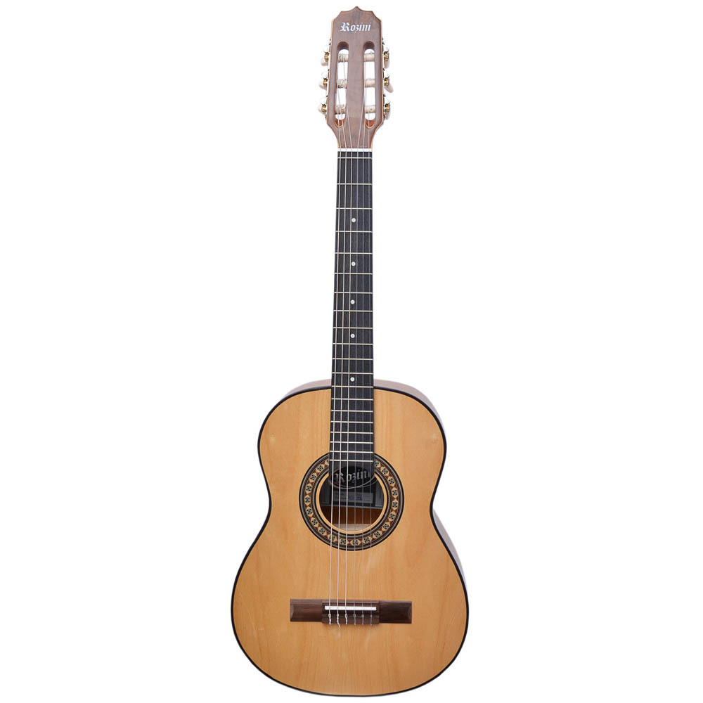
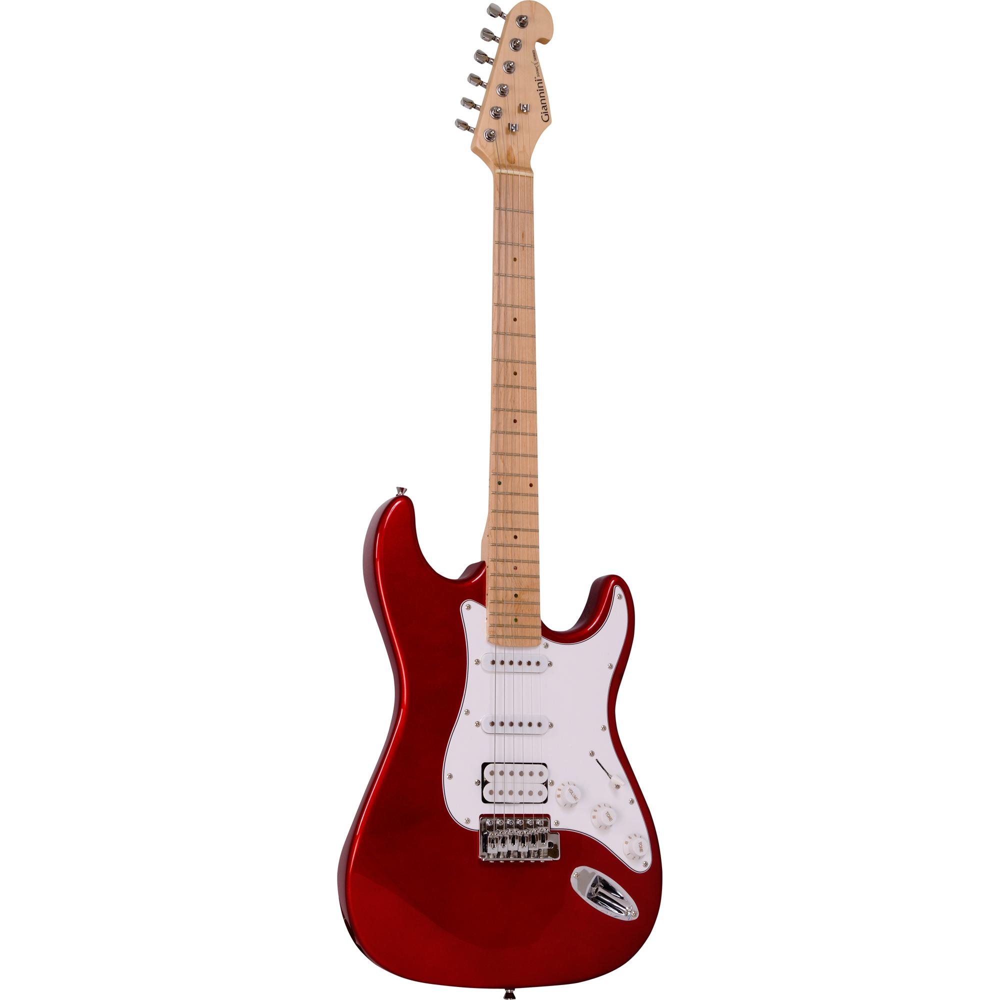
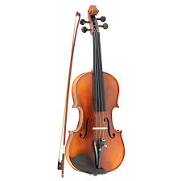

Quem Somos Nós:
Quem somos nos?
Somos apaixonados pela música e tudo o que ela representa. Desde nossa fundação, dedicamo-nos a oferecer os melhores instrumentos musicais para músicos de todos os níveis, do iniciante ao profissional. Nosso objetivo vai além de vender instrumentos: queremos inspirar e conectar pessoas através da música. Trabalhamos com as marcas mais renomadas do mercado e também apoiamos talentos locais, garantindo qualidade, diversidade e inovação em nosso catálogo. Aqui, você encontra desde violões e teclados até baterias e acessórios, sempre com o compromisso de entregar produtos que ajudam a transformar sonhos musicais em realidade. Seja você um músico experiente ou alguém que está começando sua jornada, estamos aqui para ser seu parceiro nessa incrível aventura sonora. Porque acreditamos que a música tem o poder de mudar o mundo — e cada nota conta.A música nos une, e estamos prontos para ser a trilha sonora do seu sucesso.
Produtos

Se você está começando sua jornada musical ou é um músico experiente, este violão é a escolha certa para
elevar o som e a emoção de cada acorde
Por que escolher este violão?
Construído com madeira selecionada que proporciona um som rico e encorpado, seja para dedilhar ou tocar
acordes mais intensos. Corpo ergonômico e acabamento impecável para horas de prática ou performance sem
desconforto. Ideal para estilos como MPB, sertanejo, pop ou até rock acústico. Um verdadeiro parceiro para
todas as suas inspirações. Qualidade de um instrumento profissional com um custo que cabe no seu bolso.

Seja no palco, no estúdio ou no conforto de casa, esta guitarra foi projetada para músicos que buscam som,
estilo e performance incomparáveis. Som Potente e Versátil: Captadores de alta qualidade que entregam timbres
nítidos, seja para solos impactantes ou acordes cheios de energia. Corpo leve e confortável, perfeito para
longas sessões de prática ou shows intensos. Visual moderno e marcante que combina beleza e durabilidade.
Tarraxas confiáveis e construção impecável para manter sua guitarra afinada, mesmo nas notas mais ousadas.

Dê Vida à Sua Paixão pela Música com Este Violino Incrível! Transforme cada nota em emoção com um violino que combina beleza, qualidade e um som inesquecível. Seja você um iniciante ou um músico avançado, este instrumento é a escolha perfeita para expressar sua arte. Som. Madeira selecionada e construção artesanal garantem um timbre rico e cheio de harmonia. Design ergonômico e cordas de alta qualidade para facilitar a execução de técnicas mais avançadas. Acabamento impecável, com verniz clássico que protege o instrumento e destaca sua elegância. Acompanha arco e estojo, ideal para levar o violino a qualquer lugar com segurança.
Nossa Localização